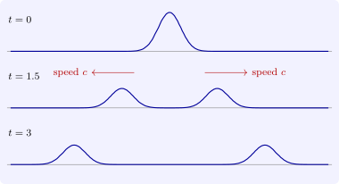

4.1 D’Alembert’s formula
Theorem 4.1.1 (d’Alembert). Let \(f \in C^2(\mathbb R)\) and \(g \in C^1(\mathbb R)\). The Cauchy problem \(u_{tt} = c^2u_{xx}\) on \(\mathbb R \times \mathbb R\), \(u(x, 0) = f(x)\), \(u_t(x, 0) = g(x)\), has exactly one \(C^2\) solution, \begin {equation} \label {eq:dalembert} u(x, t) = \frac 12\bigl (f(x + ct) + f(x - ct)\bigr ) + \frac {1}{2c}\int _{x - ct}^{x + ct}g(y)\,dy . \end {equation}
Proof. In the characteristic variables \(\xi = x + ct\), \(\eta = x - ct\), the equation becomes \(u_{\xi \eta } = 0\), as in the last problem but one of Section 3, so every \(C^2\) solution is \(u = F(x + ct) + G(x - ct)\). The initial conditions give \(F + G = f\) and \(c(F' - G') = g\), so \(F - G = \frac 1c\int _0^xg + k\) for a constant \(k\), and \[ F(\xi ) = \frac 12f(\xi ) + \frac 1{2c}\int _0^\xi g + \frac k2, \qquad G(\eta ) = \frac 12f(\eta ) - \frac 1{2c}\int _0^\eta g - \frac k2 . \] Adding \(F(x + ct)\) and \(G(x - ct)\) gives (4.2); the constant cancels, so the solution is unique. Conversely, (4.2) is \(C^2\) under the stated hypotheses and satisfies the equation and the data, by direct differentiation. □
The solution is the sum of two waves, \(F(x + ct)\) moving left and \(G(x - ct)\) moving right, each keeping its shape. A string released from rest (\(g = 0\)) with initial shape \(f\) splits into two copies of \(\frac 12f\) moving apart (Figure 5). The formula makes sense for any locally integrable \(f\) and \(g\), and then gives a weak solution; in particular, a kink or jump in the data is carried unchanged along the characteristics \(x \pm ct = \text {const}\). Unlike the heat equation, the wave equation does not smooth its data.

Questions on this section
Stuck on something here? Ask below and it stays attached to this topic.